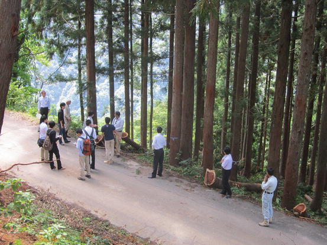
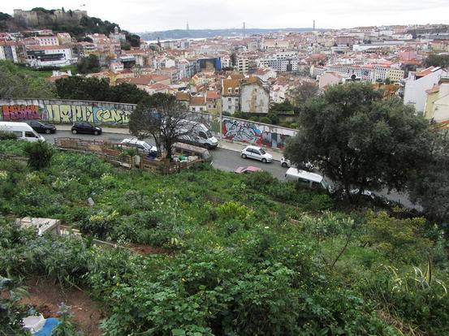
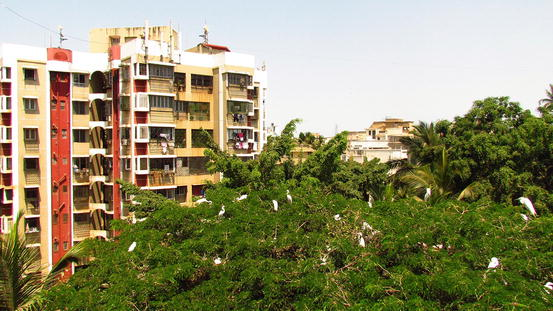
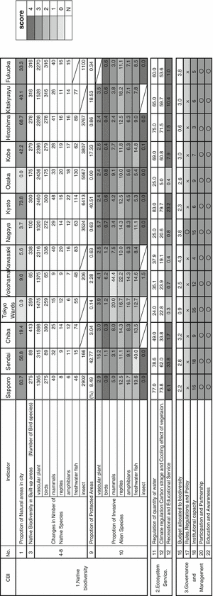

32.1 Introduction – History of Indicators
The development of environmental indicators dates back to the 1960s (OECD 1997). During the initial phase, environmental indicators were treated separately from other social and economic indicators, but since that time various frameworks have been designed to streamline different indicators in logical steps or in causal chains that include human dimensions. The PSR model (pressure-state-response) is one of the initial models from the 1990s. The framework later developed into the DPSIR model (Driving forces, Pressure, State, Impact, Responses), which has been widely used because of its logical structure and policy relevance (Kohsaka 2010). The Millennium Ecosystem Assessment (MA 2005) developed a framework to assess ecosystem change that integrated the concept of ecosystem services, thus emphasizing human well-being and allowing for the use of a wide range of indicators (Pereira et al. 2005). Within the intergovernmental process of IPBES (Intergovernmental Platform for Biodiversity and Ecosystem Services)1 there is a development of a new comprehensive framework to assess ecosystem change.
Efforts to initiate such indicators have been taken by the Convention on Biological Diversity (CBD) which historically developed its own set of indicators for assessing the 2010 target of reducing the loss of biodiversity (Walpole et al. 2009). The failure to meet the 2010 target led the parties of the CBD to set new targets for 2020, the Aichi targets (CBD Decision X/2), and the development of indicators for these targets is an ongoing process (GEO BON 2011; SCBD 2011). Biodiversity indicators need systematic observations, both on the ground and from remote sensing, and these must be possible to aggregate, in order to provide accurate information on global biodiversity change (Pereira and Cooper 2006). A global biodiversity observation network to provide the data needed for biodiversity indicators, the scientific community, international conventions and IPBES is now being developed under the auspices of the Group on Earth Observations Biodiversity Observation Network (Scholes et al. 2012; Pereira et al. 2013). Indicators were originally designed to span national to global scales, and integrated into a DPSIR framework (Butchart et al. 2010; GBO3 2010) but it has been repeatedly emphasized that there is a need for a set of scalable indicators, which could be used for upscaling of observations from local to global scales as well as downscaling (SCBD 2011; UNEP 2011).
Other types of environmental indicators have, in a few cases, been designed at the scale of municipalities and cities (Mori and Christodoulou 2012). Such indicators have sometimes been framed as “quality of life” indicators (Chan et al. 2005); sometimes they have been developed in the context of “Local Agenda 21” initiatives or in association with a general “sustainability index” (e.g., Mori and Christodoulou 2012). Such indices may have been broken down into individual environmental, social and economic indicators, but in general lacked a connection to biodiversity and ecosystem services.
It has thus become apparent that in the emerging initiatives by local governments engaging in implementing the CBD Aichi targets and the Plan of action on subnational governments, cities, and other local authorities for biodiversity (CBD Decision X/22),2 that a set of indicators specifically designed to the spatial scales of municipalities, rather than those of nations and larger regions was lacking and urgently needed (see CBI 2012).
32.2 The City Biodiversity Index (CBI)
32.2.1 The History of CBI
The City Biodiversity Index (CBI), also known as the Singapore Index on Cities’ Biodiversity (SI) is a tool designed to allow cities to monitor and evaluate their progress and performance related to conserving and enhancing biodiversity and ecosystem services (CBI 2012). The idea for the CBI was proposed in 2008 and the development of CBI has been led by the Secretariat of the CBD, in collaboration with the Global Partnership on Local and Sub-national Action for Biodiversity, the Government of Singapore, and partners from academic institutions, international organizations and civil societies.
A first technical expert workshop on the CBI was held in Singapore in February 2009. Key considerations in developing the index were its ease of use by cities, scientific credibility, and objectivity. The draft CBI comprised 25 indicators divided into three components: (1) native biodiversity in the city, (2) ecosystem services provided by biodiversity in the city, and (3) governance and management of biodiversity in the city. The rationale for these components was the need by city officials and civil society to know what biodiversity exists in their city, and its importance in terms of providing ecosystem services (such as regulation of climate or water). Governance and management were also viewed as an important component of the index, as these are the means by which cities enhance their biodiversity efforts. A quantitative scoring methodology based on a scale of 1–4 points per indicator was developed. The first version of the CBI User’s Manual was made available in September 2009 on the CBD website, and cities were invited to test the index. A second technical expert workshop, held in July 2010 in Singapore, reviewed the experience of cities that had tested the index. Participants made key revisions, including streamlining the number of indicators from 25 to 23 and fine-tuning the scoring, and a revised User’s Manual was made available. On 29th of October 2010, the Plan of Action on Sub-national Governments, Cities, and other Local Authorities for Biodiversity, was endorsed by 193 CBD parties through Decision X/22 at COP11 in Nagoya. The plan included suggestions that CBI be used by local and sub-national authorities to support the local implementation of the Aichi targets. A third technical expert workshop was held in October 2011 in Singapore. As data were available from only 14 cities for the seven indicators that require scoring ranges to be determined, participants agreed that a larger sample size was required before an appropriate statistical methodology could be adopted and the scoring ranges determined. There is now a third revision of the CBI available (CBI 2012).
32.2.2 The Structure of the CBI
The CBI indicators (Box 32.1) are broad and designed to meet three important criteria: (1) to be a comprehensive tool for assessing not only biodiversity, but also ecosystem services, governance and management; (2) to be a self-assessment tool, as it is not intended for comparisons between cities; and (3) to be a simple but yet scientifically credible tool.
Box 32.1 City Biodiversity Index
List of Indicators:
1.
Proportion of natural areas
2.
Connectivity measures or ecological networks to counter fragmentation
3.
Native biodiversity in built-up areas (bird species)
4–8.
Change in number of native species (4. vascular plants, 5. birds, 6. butterflies, 7. and 8. optional)
9.
Proportion of protected natural areas
10.
Proportion of invasive alien species
11
Regulation of quantity of water
12
Climate regulation: carbon storage and cooling effect of vegetation
13–14.
Recreational and educational services
15.
Budget allocated to biodiversity
16.
Number of biodiversity projects implemented annually
17.
Rules, regulations and policy – existence of local biodiversity strategy and action plans
18–19.
Institutional capacity
20–21.
Participation and partnership
22–23.
Education and awareness
The CBI’s current 23 indicators are viewed as core indicators and optional or sub-indicators can be developed as necessary and tailored to specific monitoring needs of individual cities. For each indicator, the CBI manual (CBI 2012) proposes a scoring of 0–4 points, where 0 corresponds to poor performance and 4 points corresponds to excellent performance. Points can be summed to provide an overall score of the city’s biodiversity performance. For some of the indicators, the conversion of the measurements to the score grade have been already proposed by experts, and for others a statistical analysis of incoming CBI data from the cities will be used to determine the scoring ranges.
32.3 Evaluation of Experiences with the CBI
32.3.1 Experiences in Japan
The background of application of the CBI in Japan was a new law, titled Basic Law on Biological Diversity (Seibutsu Tayousei Kihon -ho), that was introduced in 2008 as a parliamentary act. In Article 13 of the Law, municipalities (prefectures, cities and other local units) were called upon to develop their local biodiversity action plans. The Ministry of Environment has been leading the process with plans to develop a handbook for the municipalities including instructions on the use of specific indicators to promote development of local biodiversity strategy and action plans. The CBI has subsequently been applied in 15 cities, and in this chapter we report on two specific applications, in Yokohama and Kanazawa. We also provide a summary of applications in 13 mid to large Japanese cities (details given in Appendix I).
32.3.1.1 Experiences in Two Cities: Yokohama and Kanazawa
The City of Yokohama is the second largest city in Japan with a population of approximately 3.7 million. The steady population growth in the city has led to a decrease in green spaces from 50 % in 1970 to 30 % in 2009. Most parts of the city are dotted with forest and farmland (thus embracing dynamic water and green environments), and while the city has experienced a steady loss in green coverage, it has developed a variety of innovative, biodiversity-related measures and plans based on principles of multi-stakeholder engagement.
A study to draw experiences from the application of CBI was conducted by the United Nations University – Institute of Advanced Studies (UNU-IAS) in cooperation with the City of Yokohama. The Yokohama experience shows that one of the biggest challenges in applying the CBI was identifying key variables of biodiversity and ecosystem services for the city, along with data availability. Yokohama municipality has conducted extensive citywide extensive surveys of terrestrial species only twice in the past several decades, and due to budgetary constraints it was viewed as unrealistic to carry out such extensive surveys on a regular basis. A second challenge involved the governance indicators. Biodiversity-related activities and budgets are most often embedded in multiple other sectors of the city administration, and are difficult to separate out and report. An interesting initiative taken by Yokohama municipality is the incorporation of biodiversity into their environmental management system called ISO14001, thus aiming to minimize the impact of human activities. Through ISO14001, the issues of biodiversity are addressed in the agendas of each department and section in the city. However, it proved difficult to capture such an initiative through the current indicators. Also, while many of the current indicators may be able to report the magnitude of efforts (e.g., budgetary and personnel) the city has made for addressing the biodiversity issues, they fail to show if such efforts were successful, effective or influential. Nevertheless, it demonstrated, in particular, the validity of CBI as a tool to keep track of progress of the Yokohama’s biodiversity action plan and facilitate discussions on a way of achieving its targets.
In Japan, the CBI was tested in 13 mid- to large-size urban areas with a qualitative approach analyzed by Kohsaka and Okumura (2014) and with quantitative methods analyzed by Inoue and Morimoto (2011). A summary of the main results of these studies is given in Table 32.1 (see Appendix I for further details). Some of the challenges faced in the application of the CBI were related to the need for clearer definitions of indicators for the following terms (cf. Table 32.1) Indicator 1 – natural and semi-natural areas, Indicator 2 – fragmentation, and Indicator 9 – protected natural area. Additionally, methodological challenges included evaluation of Indicator 2 – fragmentation and Indicators 4–8 (native species). In some cities (Chiba, Kawasaki, Kyoto, and Osaka), basic data of native species were totally unavailable; this identified a need for an assessment and monitoring of the native species in these areas. For Indicator 12, the effects of heat-islands or cooling effects proved difficult to calculate in some cases. At the same time, positive remarks were expressed by city officials; they suggested that these data could be used for housing or city planning issues once the indicators are set in place (Kohsaka and Okumura 2014).
Table 32.1
Summary of experiences of the application of CBI in 13 cities
CBI indicators | Challenges |
|---|---|
1–3 Areas | Definition of natural areas and fragmentation |
4–8 Native species | Data availability |
9 Protected areas | Definition of protected areas |
10 Invasive species | Unavailable data/Unreported activities |
11–13 Ecosystem services | Difficult to calculate |
15–22 | Distinctions between general greening and biodiversity-specific activities or budgets were unclear. These include planting trees (with non-native species), recycling, etc. |
Difficulties to capture activities in schools because information is not disclosed openly | |
General comments | For urban biodiversity, increase in conservation activities does not necessarily correspond to improvements in indicators and it is difficult to set benchmarks to measure impact and performance in urban contexts. |
Number of indicators too high and to limit to “core” indicators |
Further implementation challenges were presented in making distinctions between general environmental and biodiversity-specific city activities and budget allocation; this proved difficult, irrespective of city size (Kohsaka and Okumura 2014; Inoue and Morimoto 2011). The number of indicators was also viewed to be too high to handle for small- to mid-sized cities due to limitation of human resources.
Kanazawa, the capital of Ishikawa Prefecture (population 460,000) located in the northwest of Japan has experienced a high rate of urban development since the 1970s. In general, a dichotomy between humans and nature is not at all evident in Japanese traditional thinking and landscape management (Duraiappah et al. 2012), and the suggestion from the Kanazawa experience was that local versions of CBI could developed with locally adapted forms of the indicators, reflecting the uniqueness of individual cities in different ecological and cultural contexts (UNU-IAS OUIK 2011). In Kanazawa, unique conditions include the longstanding, traditional agricultural activities that are part of the ecosystem, such as ponds and marshes used for agriculture or charcoal production activities. The richness of agro-biodiversity was perceived as particularly important and the biodiversity of the social-ecological production landscape of satoyama, was thought to be inadequately captured in the CBI. For more information on satoyama landscapes, see the local assessment of Chap. 8 (Fig. 32.1).

Fig. 32.1
In Hakusan, a suburb of Kanazawa, Japan, forests serve as a place for environmental education (Photographed by and published with kind permission of © Ryo Kohsaka 2013. All Rights Reserved)
32.3.2 Lisbon, Portugal
Lisbon is the capital of Portugal, located on the Atlantic Ocean coast in Southwestern Europe. The city has a resident population of 550,000 in an area of 85 km2, but the greater metropolitan area has a population of approximately three million people. Due to the relatively small number of green areas inside the city and dense urbanization, Lisbon has been classified as a brown city in a green background (EEA 2010). However, the metropolitan region is composed of several Natura 2000 sites, including one of the most important bird areas in Europe (Tejo Estuary), and agricultural and forest areas.
To celebrate the 2010 International Year of Biodiversity, the municipality of Lisbon decided to set an aspirational target for 2020 of increasing the biodiversity in the city by 20 % relative to its 2010 levels. The establishment of this target set in motion two important processes: (1) the definition of indicators to assess the target (operationalizing the target into measurable indicators, such as the proportion of semi-natural areas in the city or the number of native species commonly seen in the city), and (2) the development of a municipal biodiversity strategy. To develop these processes, an expert group was established, composed of representatives of the Municipality of Lisbon (CML), the Institute for the Conservation of Nature and Biodiversity (ICNB), the Municipal Environmental Agency (Lisboa E-NOVA), and scientists from the University of Lisbon. The expert group decided to base its indicator framework on the CBI, in order to build on the work being done by other cities, and to facilitate indicator harmonization in global assessments. The expert group worked for 1 year to estimate values for the 23 indicators of the CBI, mainly from compilation and GIS analysis of existing data (Appendix II). It was found that the CBI addressed most of the dimensions that the expert group wanted to cover, but there were several challenges in its application.
The first challenge was related to the concept of naturalness. There are no natural areas left inside the municipality of Lisbon (with the possible exception of the mud intertidal areas in the river front), but there are areas in the process of renaturalization. These areas include large portions of the city forest park of Monsanto (with significant areas still covered by exotic trees, despite forestry practice changes in the last 20 years that promote native tree recruitment), and abandoned areas and other semi-natural areas (that are in some cases planned for future development). The second challenge was related to the use of species number as an indicator. Species number has been shown to have limitations as a biodiversity indicator, and it has been suggested that indices based on species abundance such as the geometric mean abundance have better statistical properties (van Strien et al. 2012). Another problem is that species lists tend to be cumulative, so the expert group restricted species counts to species occurring between 2005 and 2010 (Appendix II). A third challenge was that the ecosystems service indicators and the connectivity indicators are in an early stage of methodological development. In response, the Lisbon expert group proposed several sub-indicators that can inform on the condition of biodiversity and ecosystem services, and which can be adopted by other cities applying the CBI (Appendix II). A fourth issue was that the governance and management indicators were relatively numerous and sometimes hard to assess precisely. For example, the city statistics and reports do not always make the distinction between general public parks investment or other environmental activities and biodiversity-specific activities. Finally, the Lisbon expert group did not apply the 4-point CBI scores to each indicator, as the experts felt it was subjective and did not further the monitoring goals. Instead, the numerical values of each indicator were calculated and reported (Appendix II) (Fig. 32.2).

Fig. 32.2
An urban garden near the historic center of Lisbon (Photographed by and published with kind permission of © Henrique M. Pereira 2013. All Rights Reserved)
Nonetheless, beyond the numerical value of the indicators, the implementation of the CBI in Lisbon fostered collaboration between several institutions and experts on monitoring biodiversity change and management of biodiversity. It also led to the development of a Biodiversity Strategy for Lisbon and a Local Action Plan, which hopefully will contribute to achieve the broad target set by the municipality for 2020.
32.3.3 Helsinki, Finland
The city of Helsinki is located in southern Finland by the Baltic Sea. Numerous green areas enrich the scenery of Helsinki and the structure of the city is widely dispersed. The city’s government has made a decision to maintain the city’s biodiversity even as the city grows rapidly. To support and monitor this goal, the city is searching for standardized indicators for biodiversity assessment. The CBI is one potentially useful set of indicators. A study on the availability of data for calculating CBI indicators – a feasibility study – concluded that it is possible for Helsinki to participate in the CBI, but required data are incomplete. Data exist for some of the indicators, such as Indicator 9 (proportion of protected natural areas), Indicator 19 (number of city agencies involved in inter-agency cooperation) and Indicator 21 (number of organizations with which the city is partnering in biodiversity activities). However, for many indicators (e.g., Indicators 2, 4–8 and 10–12), collection of new data is required.
Scores for the indicators have not been calculated in Helsinki yet, but a rough estimate has been produced for Indicator 1 showing that the proportion of natural areas in the city is about 40 %, which is well above the highest score (4 points: >20 %) for the indicator. However, the value of the indicator depends very much on exactly how ‘natural area’ is defined and whether the total area (including sea area) or only the terrestrial area of Helsinki is considered.
Another problem is that for many indicators it is unrealistic – for the reason of limited resources – to monitor changes in the whole city, but the CBI requires that samples need to be taken (e.g., Indicators 4–8 on changes in number of native species). In such cases an alternative would be to use the gradient approach, i.e., select sampling sites along a gradient from the city center through suburban areas to the outskirts of the city (see Chap. 10). This would also enable the cities to use reference areas outside the city to find out whether observed biodiversity changes take place within the city only or in larger geographical areas. The gradient approach would also enable studies comparing changes along the gradients between cities without comparing the cities directly. For example, this kind of an approach has been successfully used to study changes in carabid beetle assemblages along urban-rural gradients in several cities across the world (Niemelä and Kotze 2009).
The assessment of the use of the CBI in Helsinki also highlighted some more general issues regarding the index. For example, the temporal span of measurements of certain indicators pose challenges. For example, the time span of 3 years for monitoring change in the number of native bird species (Indicator 5) was considered by the city’s biologists too short to show significant changes in population sizes and ranges. A longer time span of 5–10 years was suggested. Corresponding increase in the time frame of other similar indicators (Indicators 4–8) was suggested to show changes in populations sizes and ranges. Moreover, most of the administrative area of the City of Helsinki is, in fact, water (Baltic Sea), which impacts the scores of the area-related indicators. A specific indicator for cities with considerable sea areas (for example, an indicator measuring marine biodiversity) should be considered. It also became apparent that the flow of information between the cities participating in CBI should be enhanced for useful comparisons, and information about how different cities have tested and provided their preliminary scores should be made available for participants and potential participants of the CBI.
32.3.4 Mira Bhainder, India
Mira Bhainder is a small but rapidly expanding city to the north of Mumbai, India. Due to its proximity to Mumbai, India’s commercial capital, this formerly peri-urban area has grown into a city in the past decade and now has its own administrative municipal body. Many of Mira Bhainder’s residents travel to neighbouring Mumbai for work. The built-up areas are concentrated around the center of town, while the periphery is dotted with settlements surrounded by secondary growth deciduous forest patches and plantations. Mira Bhainder spans an area of 91.9 km2, more that 40 % of which includes part of a national park and stretches of mangrove forests.
Terracon3 introduced the City Biodiversity Index to the city administration of Mira Bhainder with a proposal to apply the Index to the city, and Mira Bhainder became the first city in India to apply the CBI. Terracon required about 2 months for conducting this exercise with multiple personnel from various fields ranging from biodiversity experts, GIS specialists and planners. Most of the raw baseline data required for spatial analyses was available from the city municipal corporation. However, the data did not clearly define boundaries of natural areas such as those between mangroves and saltpans, forest patches, etc. Terracon defined these boundaries with the help of open source Google images and also from results of previous projects (Fig. 32.3).

Fig. 32.3
Live and Let Live: It is remarkable to see great egrets (Casmerodius albus) nesting atop a raintree (Albizia saman) in the center of town, as seen from the terrace of Mira Bhainder Municipal Corporation’s Garden Department office. Surrounded by residential complexes and offices, it is symbolic of human populace and biodiversity living side by side (Photographed by and published with kind permission of © Salil P. Kawli 2013. All Rights Reserved)
There were multiple challenges in applying the CBI to Mira Bhainder. One was the paucity of baseline data on biodiversity. The difficulties with calculating Indicators 3–8 led the indicator team to suggest to the city administration the need for more detailed baseline biodiversity surveys. Making the city administration conduct more biodiversity surveys would also help to mainstream biodiversity in the planning process, as well as indirectly help raise awareness about biodiversity.
32.3.5 Edmonton, Alberta, Canada
Edmonton is the capital of the Province of Alberta in western Canada in the northern part of the Great Plains of North America. Edmonton is a relatively young city and still has a significant area of agricultural land, but significant growth pressure is resulting in the conversion of farmland and natural patches to urban development. Approximately 10 % of Edmonton’s area is in a natural state (i.e., a predominance of native vegetation in naturally occurring patterns) (City of Edmonton, 2007, Natural Connections Strategic Plan).
Edmonton’s relatively low biodiversity is related to its climate. It is one of the coldest cities using the CBI, and the scores for the biodiversity and ecosystem services components are low when compared to most other cities – particularly cities located in tropical and Mediterranean ecosystems. This highlights the fact that the index is a primarily a self-assessment tool and that caution is necessary when comparing cities. Nevertheless, the CBI is an important tool locally to provide feedback to local decision makers in Edmonton on the effect of city policies on biodiversity over time.
In contrast to the biodiversity and ecosystem services component of the CBI, the sub-scores of the governance component of the index provide meaningful insight when compared to other cities and are useful for benchmarking programs and initiatives. However, there are some caveats. For example, the area of protected natural spaces can vary greatly between cities, depending on whether the local authority has sufficient enabling legislation to protect nature or must protect nature with its own budget from the tax roll. In addition, some cities have federal and provincial/state protected areas within its boundaries, which can boost the scores significantly. In addition, regional governments have a higher probability of better scores than single cities because the catchment area is much larger and often includes undeveloped lands.
Populating the CBI with data has proven to be a catalyst for accelerating innovation in Edmonton. The CBI is a potent community engagement tool. In order to gather data for the species indicators, The City of Edmonton brought together many citizens and groups with specialized knowledge of the number of individual species in the area to provide the first comprehensive species list in the city. These relationships have developed and grown. In order to meet the challenge of calculating the impervious area of the city, the Office of Biodiversity acquired its first satellite imagery, which has yielded positive results in other areas as well.
Although Edmonton has found some limitations to the index, these limitations can be overcome with the addition of indicators to supplement the CBI. The Office of Biodiversity also maintains an additional suite of indicators to manage the effectiveness of policies and programs. Other limitations of the index include:
- The species indicators do not register change until a species has been lost. Edmonton is working on a finer grain estimate of species change.
- The number of formal educational visits to natural areas is not tracked in Edmonton and many neighborhoods have been designed to include natural areas and schools that are adjacent to each other, so formal visits can be frequent.
- The budget allocated to biodiversity annually is extremely hard to estimate for local authorities like Edmonton where biodiversity functions exist in a highly integrated management system.
- It is only possible to get a rough estimate of the number of outreach and public awareness events held in the city each year because of the large number of non-profit organizations and other institutions involved in this work. The recently created Edmonton Biodiversity Network should help Edmonton in the future.
32.4 Challenges Ahead
The experiences from these cities show that there are multiple potential benefits of the CBI in promoting conservation and sustainable use of biodiversity at the local level. For example in the Japanese cities, the application of the CBI promoted inter-sectional dialogue across different departments in the cities, which otherwise would not have communicated.
There may be a general pattern here, whereby sharing, interpreting and reflecting on the results among different departments for the improvement of their daily administration work may facilitate internal communications and improve the capacity of the local government. Also, through quantifying biodiversity and ecosystem services, and evaluating their changes over time, the CBI may motivate various stakeholders to recognize their connections with biodiversity, register concern, and take action for stewardship. In addition, the CBI may enable the local government to establish a system to address urban sustainability more generally, particularly when indicators are linked to numerical targets in plans or strategies of the city (see Chap. 33 for further discussion on the future implications for sustainability).
The practical application challenges of the CBI are many, but could be summarized as relating to: (1) the lack of data; (2) the scale, boundaries, and definitions; (3) the scoring that needs to capture the vast bio-geographical differences among cities; and (4) the number and scope of ecosystem services are limited. The lack of data is a challenge but also a motivation: the CBI can provide incentives for municipalities to start making inventories and monitoring programs of their biodiversity. For example, it is today possible to integrate remote sensing data and in situ observations to monitor several essential biodiversity variables such as habitat structure and phenology (Pereira et al. 2013).
In this context, municipalities should explore the possibilities of launching citizen science projects (see Chap. 30) and consider the possibility in general that within cities local knowledge on biodiversity and ecosystem services may reside in many different groups within civic society (for a general overview, see Chap. 30). Another general issue reported by many of the cities analyzed here was that the number of indicators was too large. We feel that a revision of the CBI should try to reduce or merge indicators, particularly in the governance section because institutional arrangements such as the budget, number of activities, and existence of departments overlap with one another.
The challenges related to scaling, boundaries, locally adapted indicators and scoring can be met by each municipality developing their interpretation of what scale and what boundary is the most appropriate, what definitions to use, and what set of sub-indicators may best reflect the local ecological and cultural context. However, there are some challenges that are not easily addressed at the municipal level and need input from the research community. One important challenge is related to the development of indicators that could complement or even replace some of the species-richness-based indicators. Recent work on the identification of essential biodiversity variables (Pereira et al. 2013) suggests that important variables to measure are species abundances, species traits, and ecosystem structure. Monitoring of how urbanization and changes in habitat structure may result in changes in species abundances (Pereira and Cooper 2006) and losses and gains of functional traits (Cornelissen et al. 2003; Lavorel et al. 2007) will be very important. Grouping species according to functional type characteristics builds on the assumption that these groupings share similar resource-use patterns and ecosystem roles, and are responding in similar ways to environmental conditions or disturbance. Thus, functional types could potentially be extremely useful management tools where indicator types could be generated and predictive models on changes in generation of ecosystem services could be developed. Furthermore, a functional type approach allows for regional comparisons with the formation of a common language through which taxonomically distinct and complex systems can be effectively compared. So far, such analyses have been carried out in a large number of habitat types, except in the urban landscape (Chap. 10).
Another challenge relates to expanding the part of ecosystem services in the CBI, and here much further research needs to be done (for a further discussion on urban ecosystem services, see Chap. 11). In contrast with indicators that emphasize the biological component of ecosystems, such as species extinction risk or trends in invasive species, indicators for ecosystem services have to include a social dimension, as ecosystem services are produced by an interconnected social-ecological system rather than by ecosystems alone (Reyers et al. 2013). Measuring ecological properties and functions alone will not provide an adequate picture of ecosystem service status and trends; rather, a significant input of additional social and economic data will also be required. These elements are reflected in the conceptual framework of the CBI, which aims to capture changes in benefits of services, impacts in human well-being and effects of policy, but needs to be further developed. A second challenge with ecosystem service indicators is related to the interactive characters of bundles of ecosystem services (i.e., a tight positive or negative correlation among sets of services). Such correlations mean that when managing for the increase of a particular service, others may increase (synergy) or decrease (trade-off) simultaneously. Such synergies and trade-offs are poorly documented, and the evaluation of trends in ecosystem services in the CBI over longer periods of time is of special interest (because patterns of trade-offs among services and different trends in the responses of services to certain management schemes may be revealed). Furthermore, it has been stressed by many applying the CBI that indicators capturing the flow of ecosystem services from more distant ecosystems beyond the city would be desirable to include, in order to assess the impact that cities and their inhabitants and policies have on ecosystems elsewhere (cf. Seto et al. 2012; Seitzinger et al. 2012).
Despite these challenges, the CBI is a powerful tool for increasing the importance of biodiversity in city management. The CBI can bring managers, scientists and other stakeholders together to think about the role of biodiversity in the city. The impacts of different policies and land-planning options on biodiversity can be assessed with the CBI. We hope that as more cities develop local action plans and strategies in response to the call of the CBD (Decision X/22), the CBI will be further developed and enriched with experiences around the world, and biodiversity management will come to the forefront of city planners’ concerns and help improve the well-being of all urban dwellers.
Appendices
Appendix I
General outcome of CBI application to Japanese cities

Appendix II
The City Biodiversity Index for the municipality of Lisbon in 2010
Indicator | Interpretation note | Value | |
|---|---|---|---|
1. Proportion of Natural Areas in the City | In the municipality there are no pristine areas. Based on areas naturalized by abandonment (921 ha) and forested areas where the long-term goal is renaturalization (936 ha) | 22 % | |
2. Connectivity | |||
3. Native biodiversity in built-up areas | Number of species | Birds | 76 |
4–8. Native biodiversity in the city | Number of native species with confirmed occurrence between 2005 and 2010 | Vascular plants | 342 |
Fungi | 140 | ||
Birds | 126 | ||
Mammals | 19 | ||
Amph. & reptiles | 28 | ||
Fish | 45 | ||
9. Proportion of protected areas | These are the areas in Lisbon that have to be managed as forest areas | 16 % | |
10. Invasive species | Number of species | Vascular plants | 32 |
Birds | 4 | ||
11. Water cycle regulation | Soil permeability is used as a proxy for this ecosystem service | 39 % | |
12. Climate regulation | Forest cover | 1,352 ha | |
Street trees | 190 km | ||
Proportion of tree canopy cover | 18 % | ||
Carbon sequestration | 5,144 t CO2/year | ||
13. and 14. Recreation and education | Recreation was calculated based on all green areas in the city (3,369 ha) | Green area per inhabitant | 27 m2
|
No available data for educational services | Population lacking neighborhood green areas | 380,000 | |
15–23. Governance and management | Annual budget allocated to the municipal department of environment and public spaces (only a part of which is spent on biodiversity management) | 46 M€ | |
Number of institutions related to biodiversity | 102 | ||
Number of information and educational actions promoted by the municipality on biodiversity | 811 | ||
References
Butchart, S. H. M., Walpole, M., Collen, B., van Strien, A., Scharlemann, J. P. W., Almond, R. E. A., Baillie, J. E. M., Bomhard, B., Brown, C., Bruno, J., Carpenter, K. E., Carr, G. M., Chanson, J., Chenery, A. M., Csirke, J., Davidson, N. C., Dentener, F., Foster, M., Galli, A., Galloway, J. N., Genovesi, P., Gregory, R. D., Hockings, M., Kapos, V., Lamarque, J.-F., Leverington, F., Loh, J., McGeoch, M. A., McRae, L., Minasyan, A., Morcillo, M. H., Oldfield, T. E. E., Pauly, D., Quader, S., Revenga, C., Sauer, J. R., Skolnik, B., Spear, D., Stanwell-Smith, D., Stuart, S. N., Symes, A., Tierney, M., Tyrrell, T. D., Vie, J.-C., & Watson, R. (2010). Global biodiversity: Indicators of recent declines. Science, 328, 1164–1168.PubMedCrossRef
CBI. (2012). User’s manual for the city biodiversity index. Secretariat of the Convention on Biological Diversity. Available at: http://www.cbd.int/en/subnational/partners-and-initiatives/city-biodiversity-index
Chan, Y. K., Kwan, C. C. A., & Shek, T. L. D. (2005). Quality of life in Hong Kong: The CUHK Hong Kong quality of life index. Social Indicators Research, 71, 259–289.CrossRef
Cornelissen, J. H. C., Lavorel, S., Garnier, E., Díaz, S., Buchmann, N., Gurvich, D. E., Reich, P. B., ter Steege, H., Morgan, H. D., van der Heijden, M. G. A., Pausas, J. G., & Poorter, H. (2003). A handbook of protocols for standardised and easy measurement of plant functional traits worldwide. Australian Journal of Botany, 51, 335–380.CrossRef
Duraiappah, A. K., Nakamura, K., Takeuchi, K., Watanabe, M., & Nishi, M. (2012). Satoyama–Satoumi ecosystems and human well-being: Socio-ecological production landscapes of Japan. Tokyo: UNU Press.
EEA. (2010). The European environment – State and outlook 2010 – Urban environment. Copenhagen: EEA.
GBO3. (2010). Global biodiversity outlook 3. Montreal: Secretariat of the Convention on Biological Diversity.
GEO BON. (2011). Adequacy of biodiversity observation systems to support the CBD 2020 targets. Pretoria: GEO BON Office.
Inoue, & Morimoto. (2011). The research on cities‘ biodiversity index -cities’. Evaluation by Singapore Index- Kyoto University. Masters thesis: Graduate School of Global Environmental Studies, Kyoto University
Kohsaka, R. (2010). Developing biodiversity indicators for cities: Applying the DPSIR model to Nagoya and integrating social and ecological aspects. Ecological Research, 25, 925–936.CrossRef
Kohsaka, R., & Okumura, S. (2014 in print). Greening the cities with biodiversity indicators; Experience and challenges from Japanese cities with CBI. In T. Yahara & S. Nakano (Eds.), The biodiversity observation network in the Asia-Pacific Region.
Lavorel, S., Díaz, S., Cornelissen, J. H. C., Garnier, E., Harrison, S. P., McIntyre, S., Pausas, J. G., Pérez-Harguindeguy, N., Roumet, C., & Urcelay, C. (2007). Ch 13: Plant functional types: Are we getting any closer to the holy grail? In J. G. Canadell, D. Pataki, & L. Pitelka (Eds.), Terrestrial ecosystems in a changing world (The IGBP series). Berlin/Heidelberg: Springer.
Millennium Ecosystem Assessment (MA). (2005). Ecosystems and human well-being: A framework for assessment. Washington, DC: Island Press.
Mori, K., & Christodoulou, A. (2012). Review of sustainability indices and indicators: Towards a new City Sustainability Index (CSI). Environmental Impact Assessment Review, 32(2012), 94–106.CrossRef
Niemelä, J., & Kotze, J. (2009). Carabid beetle assemblages along urban to rural gradients: A review. Landscape and Urban Planning, 92, 65–71.CrossRef
OECD. (1997). Better understanding our cities: The role of urban indicators. Paris: OECD Publication.
Pereira, H. M., & Cooper, H. D. (2006). Towards the global monitoring of biodiversity change. Trends in Ecology & Evolution, 21, 123–129.CrossRef
Pereira, H. M., Reyers, B., Watanabe, M., Bohensky, E., Foale, S., Lee, M., Palm, C., & Patwardhan, A. (2005). Condition and trends of ecosystem services and biodiversity. In Ecosystems and human well-being: Multi-scale assessments millennium ecosystem assessment (pp. 171–203). Washington, DC: Island Press.
Pereira, H. M., Ferrier, S., Walters, M., Geller, G. N., Jongman, R. H. G., Scholes, R. J., Bruford, M. W., Brummitt, N., Butchart, S. H. M., Cardoso, A. C., Coops, N. C., Dulloo, E., Faith, D. P., Freyhof, J., Gregory, R. D., Heip, C., Höft, R., Hurtt, G., Jetz, W., Karp, D., McGeoch, M. A., Obura, D., Onoda, Y., Pettorelli, N., Reyers, B., Sayre, R., Scharlemann, J. P. W., Stuart, S. N., Turak, E., Walpole, M., & Wegmann, M. (2013). Essential biodiversity variables. Science, 339, 277–278.PubMedCrossRef
Reyers, B., Biggs, R., Cumming, G. S., Elmqvist, T., Hejnowicz, A. P., & Polasky, S. (2013). Getting the measure of ecosystem services: A social-ecological approach. Frontiers in Ecologyand the Environment, 11, 268–273.CrossRef
SCBD. (2011). Report of the AHTEG on indicators for the Strategic Plan for Biodiversity 2011–2020. Montreal: Secretariat of the Convention on Biological Diversity.
Scholes, R. J., Walters, M., Turak, E., Saarenmaa, H., Heip, C. H., Tuama, É. Ó., Faith, D. P., Mooney, H. A., Ferrier, S., Jongman, R. H., Harrison, I. J., Yahara, T., Pereira, H. M., Larigauderie, A., & Geller, G. (2012). Building a global observing system for biodiversity. Current Opinion in Environmental Sustainability, 4, 139–146.
Seitzinger, S., et al. (2012). Planetary stewardship in an urbanizing world: Beyond city limits. Ambio, 41, 787–794. doi:10.1007/s13280-012-0353-7.PubMedCrossRef
Seto, K. C., Reenberg, A., Boone, C. G., Fragkias, M., Haase, D., Langanke, T., Marcotullio, P., Munroe, D. K., et al. (2012). Urban land teleconnections and sustainability. Proceedings of the National Academy of Sciences of the United States of America, 109, 7687–7692. doi:10.1073/pnas.1117622109.PubMedCrossRef
UNEP. (2011). Report of an international science workshop on assessments for an intergovernmental science-policy platform on biodiversity and ecosystem services, held in Tokyo from 25 to 29 July 2011. UNEP/IPBES.MI/1/INF/12. Nairobi:UNU.
UNU-IAS OUIK. (2011). Biodiversity in Kanazawa. Through the four seasons. United Nations University-Institute of Advanced Studies Operating Unit Ishikawa/Kanazawa Booklet. Kanazawa: UNU-IAS.
van Strien, A. J., Soldaat, L. L., & Gregory, R. D. (2012). Desirable mathematical properties of indicators for biodiversity change. Ecological Indicators, 14, 202–208.CrossRef
Walpole, M., Almond, R. E. A., Besancon, C., Butchart, S. H. M., Campbell-Lendrum, D., Carr, G. M., Collen, B., Collette, L., Davidson, N. C., Dulloo, E., Fazel, A. M., Galloway, J. N., Gill, M., Goverse, T., Hockings, M., Leaman, D. J., Morgan, D. H. W., Revenga, C., Rickwood, C. J., Schutyser, F., Simons, S., Stattersfield, A. J., Tyrrell, T. D., Vie, J.-C., & Zimsky, M. (2009). Tracking progress toward the 2010 biodiversity target and beyond. Science, 325, 1503–1504.PubMedCrossRef
Footnotes